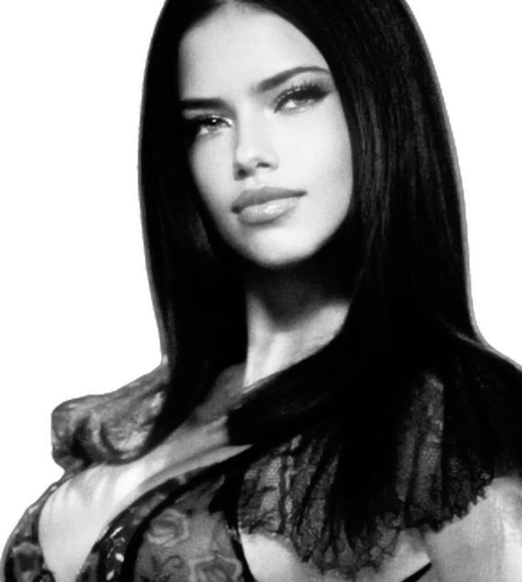

Adriana Lima is a Brazilian model. She was a Victoria's Secret Angel from 1999 to 2018. She was the longest-running model and named "the most valuable Victoria's Secret Angel" in 2017. She is also known as a spokesmodel for Maybelline cosmetics since 2003, and for her Super Bowl and Kia Motors commercials. At age 15, Lima won Ford Models' "Supermodel of Brazil" competition, and took second place the following year in the Ford "Supermodel of the World" competition before signing with Elite Model Management in New York City.
Lima is currently ranked by models.com as one of the "New Supers".
Since 2014, Lima has been the world's second highest-paid model. In 2012, she
came in 4th place on the Forbes top-earning models list, estimated to have earned $7.3 million
in one year. In 2013, she came in 3rd place and in 2014 she came in 2nd place with
earnings of $8 million. In 2015, she came in 2nd place with earnings of $9 million.
In 2016, she kept the second place with earnings of US$10.5 million.
Lima has served as brand ambassador for the clothing brand Desigual based in Barcelona, Spain, for the Beachwear collection of Italian brand Calzedonia, and for the ready-to-wear collection of Italian brand Sportmax. She is currently an ambassador for International Watch Company (IWC), Puma, Maybelline, and Chopard.
